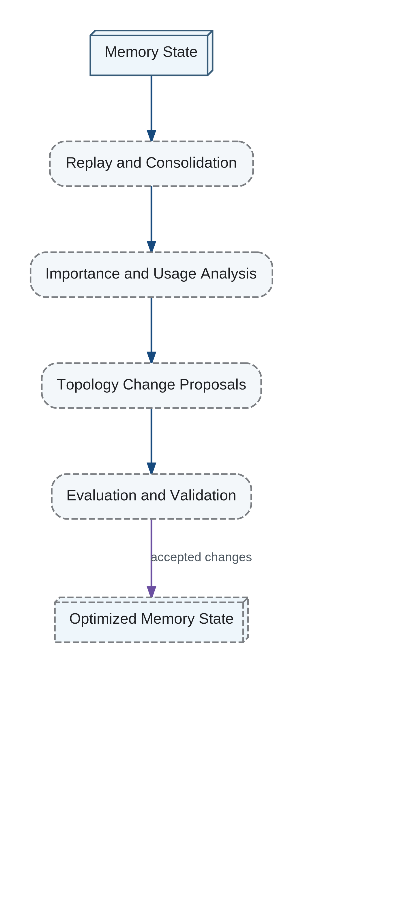

Local reorganization changes a bounded region of the knowledge graph or memory index. Global reorganization changes cross-domain evaluation, fundamental categories, objective priorities, or the relationship between memory and model.
Offline Sleep and Structural Optimization

Local changes should be common. Global changes should require stronger evidence because their errors propagate widely and can alter identity continuity.
Only one major model should normally undergo cardinal restructuring at a time. Rate limits and staged evaluation reduce cascading adaptation to noise. Emergency exceptions remain possible when evidence indicates a global regime change.